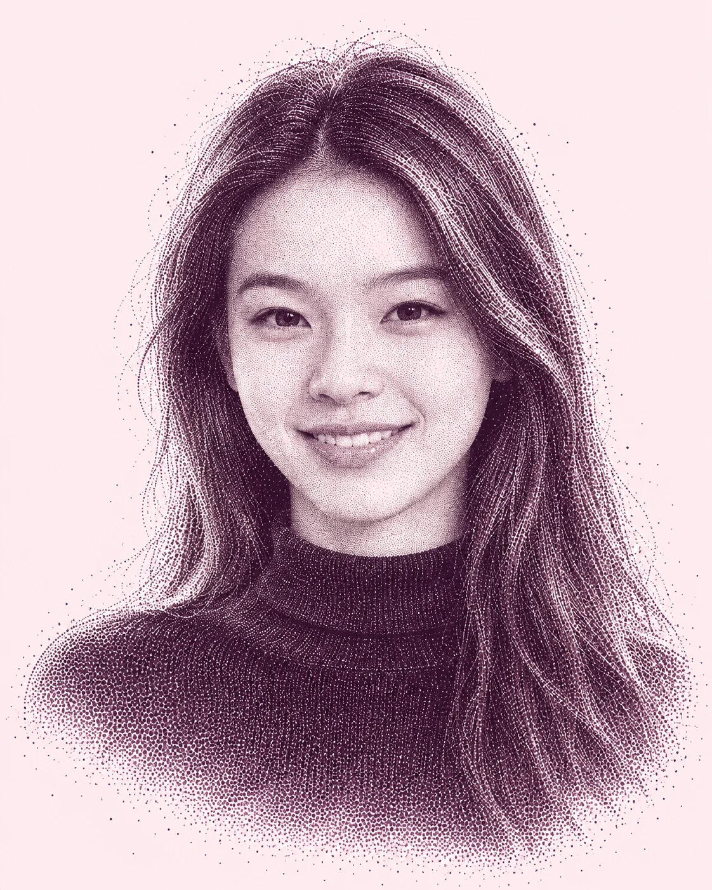

Aixin (Katherine) Li
Bioinformatics Scientist at Labcorp
MBBS · MPH in Epidemiology & Biostatistics
Ph.D. in Epidemiology (Minors in Biostatistics & Data Science)
We spend years conducting research and publishing papers, yet translating scientific discoveries into clinical practice remains a challenge.
Bridging the gap between discovery and patient care is what motivates me.

What I work on
Domain Biomedical & Clinical Sciences
Clinical Medicine
Medical training and clinical rotations across specialties, with foundations in disease mechanisms, diagnosis, and treatment.
Molecular Biology & Multi-omics
Human genetics, genomics, proteomics, molecular biomarkers, and disease biology.
Clinical Genomics & Precision Medicine
Genetic testing, molecular diagnostics, genomic variant detection, and clinical applications.
Population & Translational Health
Disease etiology, cardiovascular disease, infectious diseases, biomarker discovery, and prevention.
Methods Statistical Genetics, Multi-omics & Machine Learning
Human genetics, causal inference, and statistical learning across international population cohorts.
Primary analyst on NIH-funded research
$6.6MCombined NIH funding
3NIH-funded projects
6International cohorts
CirculationEqual co-first author, 2026
Impact factor 41.3 · Publication ↗
Statistical Genetics & Computational Genomics
Large-scale genetic association analyses, polygenic risk modeling, and molecular QTL analysis.
GWAS · Rare Variants · PRS-CS · pQTL/eQTL · PLINK · GCTA · SAIGE · SKAT-O · Linux/Unix
Multi-omics & Causal Inference
Lead multi-cohort analyses integrating genetic, proteomic, and clinical data for biomarker discovery and causal investigation.
SomaScan · Olink · Mendelian Randomization · Meta-analysis · Data Harmonization · Bayesian Analysis · SQL
Biostatistics & Machine Learning
Lead international collaborations in disease risk prediction, model development, and external validation across diverse populations.
High-dimensional Modeling · Survival Analysis · Statistical Learning · External Validation · R · Python · SAS
Systems Software & AI Engineering
Full-stack development, agentic AI, clinical ML pipelines, and MLOps.
Full-Stack Development & Agentic AI
Lead end-to-end development of a genomic reference-data platform and a tool-calling LLM agent for internal users, covering database design, backend APIs, frontend development, and AWS cloud infrastructure.
TypeScript · Node.js · PostgreSQL · LLM Tool Calling · Serverless Architecture
Machine Learning Engineering & MLOps
Lead the development and maintenance of clinical ML and deep learning pipelines across testing sites, from GPU-based model training and benchmarking to automated cloud workflows.
Python · PyTorch · TensorFlow · AWS Batch · SageMaker Pipelines · GPU Computing
Clinical Bioinformatics
Develop and maintain clinical bioinformatics pipelines for variant detection, CNV analysis, sequencing quality control, and assay-specific computational methods.
NGS · DeepVariant · Sanger Confirmation ML · NVIDIA Parabricks · Variant Calling
Papers and honors
Papers
Honors
Early Career Investigator Award, CHARGE Consortium
1st place group, CMI-PB Challenge
Oral presentation, American Heart Association Scientific Sessions
Oral and top-scoring presentation, American Heart Association EPI | Lifestyle Scientific Sessions
Contact
Thank you for stopping by. Feel free to reach out.